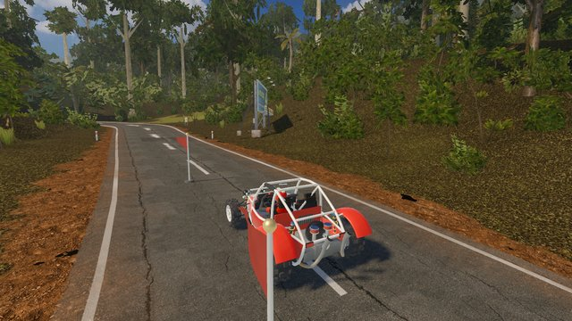
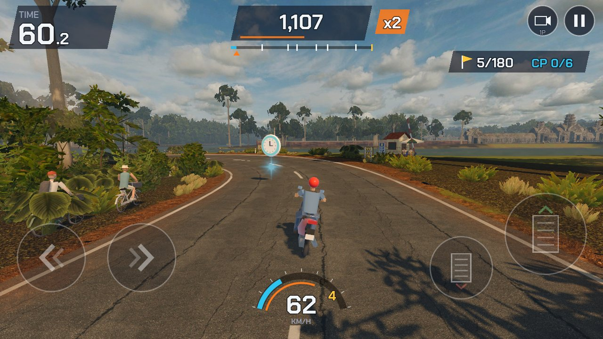
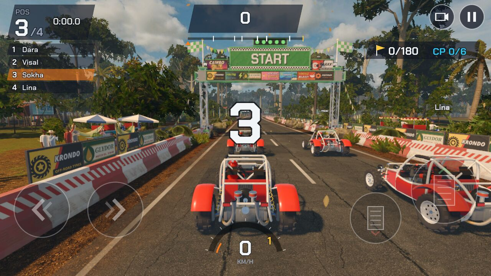
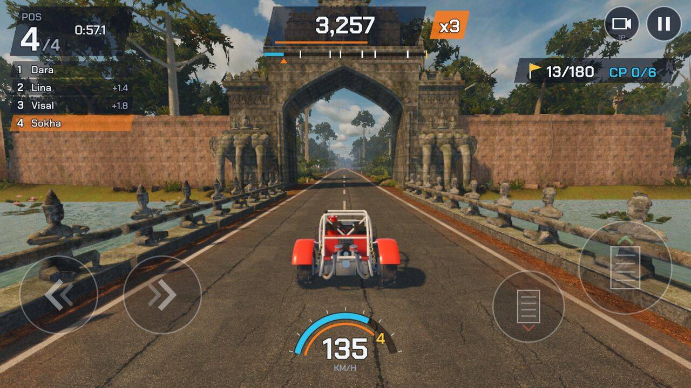

Cambodia Rally
Every version of this page since 18 Nov 2026, newest first: what changed, and the captures and videos as the page showed them at the time.
Chaque version de cette page depuis le 18 nov. 2026, de la plus récente à la plus ancienne : ce qui a changé, et les captures et vidéos telles que la page les montrait à l’époque.
គ្រប់កំណែនៃទំព័រនេះ តាំងពីថ្ងៃទី 18 វិច្ឆិកា 2026 ពីថ្មីបំផុតទៅចាស់៖ អ្វីដែលបានផ្លាស់ប្តូរ និងរូបថតអេក្រង់ និងវីដេអូ ដូចដែលទំព័របានបង្ហាញនៅពេលនោះ។
Nothing on this page has been regenerated: every capture and video is the file the site published at the time, recovered from its Git history. What the site never published is not here. Since 21 November 2026, every change to the project page adds a version here, and the captures, videos and Last changes it replaces are kept.Rien sur cette page n’a été régénéré : chaque capture et chaque vidéo est le fichier que le site publiait à l’époque, retrouvé dans son historique Git. Ce que le site n’a jamais publié n’y figure pas. Depuis le 21 novembre 2026, chaque changement de la page du projet ajoute ici une version, et les captures, vidéos et derniers changements qu’il remplace sont conservés.គ្មានអ្វីនៅលើទំព័រនេះត្រូវបានបង្កើតឡើងវិញទេ៖ រូបថតអេក្រង់ និងវីដេអូនីមួយៗ គឺជាឯកសារដែលគេហទំព័របានផ្សាយនៅពេលនោះ ដែលបានយកមកវិញពីប្រវត្តិ Git របស់វា។ អ្វីដែលគេហទំព័រមិនដែលផ្សាយ មិនមាននៅទីនេះទេ។ តាំងពីថ្ងៃទី 21 ខែវិច្ឆិកា ឆ្នាំ 2026 ការផ្លាស់ប្តូរនីមួយៗនៃទំព័រគម្រោង បន្ថែមកំណែមួយនៅទីនេះ ហើយរូបថតអេក្រង់ វីដេអូ និងការផ្លាស់ប្តូរចុងក្រោយ ដែលវាជំនួស ត្រូវបានរក្សាទុក។
From the latest to the first.De la plus récente à la première.ពីកំណែចុងក្រោយ ដល់កំណែដំបូង។
-
Kampot, the Monolith and the monsoonKampot, le Monolith et la moussonកំពត Monolith និងមូសុង
The page catches up with the repository: the two Kampot stages with their seasons and films, nine vehicles with the Monolith 4x4 and real 4x4 cabins, the Fugitive mode, the monsoon and night races, two-thumb controls, bend signs and the GPS, heavier damage now seen by every phone, and the Kampot frame rates on the Galaxy A56. Two stage pictures are added, and the Last changes run to 25 November 2026.
La page rattrape le dépôt : les deux étapes de Kampot avec leurs saisons et leurs films, neuf véhicules avec le Monolith 4x4 et de vrais habitacles de 4x4, le mode Fugitif, la mousson et les courses de nuit, la direction à deux pouces, les panneaux de virage et le GPS, des dégâts plus lourds désormais vus par tous les téléphones, et les images par seconde de Kampot sur le Galaxy A56. Deux images d’étapes s’ajoutent, et les Derniers changements vont jusqu’au 25 novembre 2026.
ទំព័រនេះធ្វើបច្ចុប្បន្នភាពតាម repository៖ ដំណាក់កាលកំពតទាំងពីរ ជាមួយរដូវ និងខ្សែភាពយន្តរបស់វា យានយន្តប្រាំបួន រួមទាំង Monolith 4x4 និងកន្លែងអង្គុយខាងក្នុងពិតប្រាកដនៃរថយន្ត 4x4 របៀបអ្នករត់គេច ការប្រណាំងក្រោមមូសុង និងពេលយប់ ការបញ្ជាដោយមេដៃពីរ ស្លាកផ្លូវបត់ និង GPS ការខូចខាតធ្ងន់ជាងមុន ដែលឥឡូវទូរស័ព្ទទាំងអស់មើលឃើញ និងល្បឿនរូបភាពនៃកំពតលើ Galaxy A56។ រូបភាពដំណាក់កាលពីរត្រូវបានបន្ថែម ហើយការផ្លាស់ប្តូរចុងក្រោយ រហូតដល់ថ្ងៃទី 25 ខែវិច្ឆិកា ឆ្នាំ 2026។
Taken off the page’s Last changes, kept hereSortis des derniers changements de la page, gardés iciដកចេញពីការផ្លាស់ប្តូរចុងក្រោយនៃទំព័រ រក្សាទុកនៅទីនេះ- Engine smoke, sparks and grinding
A damaged engine smokes from 25 % damage, light grey at first, thick and black near the end. Sparks now fly from the point where the car is hit, not always from the nose, and sliding along a wall or scraping the underside on hard ground throws a steady spray of sparks with a metal grinding sound. This works at every effects level.
- Hard steering tightens the line
With the throttle and full steering held, as on a phone’s buttons, the car used to keep accelerating through a tight corner and run wide. Above about 30 km/h, hard steering now eases off the engine and the tyres scrub off speed: from 90 km/h the car turns on a radius of about 32 m instead of 68 m.
- People and animals get out of the way
Monks, tourists, villagers, macaques, dogs, pigs, poultry and egrets step, run or fly out of the path of any car. When the player’s car comes too fast for them it knocks them: a person falls and gets up, a small animal rolls and runs off, a bird flies up, and the car loses some speed and takes a dent. Elephants and the other big animals stay solid, and the elephants trumpet; the spectators, now modelled people, watch the cars, cheer and step aside instead of being obstacles.
- Elephants, bikes and the cockpit view
The elephants were reshaped: thin cupped ears, legs that flare into the body, toenails, a trunk tip with its finger, the belly at an Asian elephant’s height, one grey hide with folds behind the shoulder, cracked and creased from Medium effects up. The scooter and the moto now lean into the bends; they used to lean out. In the cockpit view the eye sits in the rider’s head on the two-wheelers and the tuk-tuk, and the 4x4s’ dark glass no longer blacks out the windscreen.
- Traffic on the Angkor roads
Races can now have road traffic, none, light or dense, chosen with the circuit: 4x4s in the road lanes both ways, scooters, motos and tuk-tuks in the slow lanes by the edge. The player’s car hits what it drives into, and knocked vehicles shake, honk and keep their dents. Each traffic level keeps its own records and allows 7 % more time; traffic is not yet in multiplayer races or in the films.
- Sponsor boards over and along the road
The scoring gates became road-wide boards for The Moon Kampot and Chantrea Systems on two lattice masts, and the checkpoints now stand under the same boards. Every roadside billboard carries the two sponsors, turned to face the road, with no wall, plant or house in front of the print. Each film has a shot under a gantry and past each sponsor’s billboard, rises over every temple of its circuit and names it, and its three cars no longer drive through one another.
- Fumée, étincelles et raclements
Un moteur endommagé fume dès 25 % de dégâts, d’un gris clair d’abord, puis d’une fumée noire et épaisse vers la fin. Les étincelles jaillissent désormais du point d’impact, et non plus toujours de l’avant, et frotter un mur ou racler le soubassement sur un sol dur projette une gerbe continue d’étincelles, avec un grincement de métal. C’est vrai à tous les niveaux d’effets.
- Braquer fort resserre la trajectoire
Accélérateur et direction à fond, comme avec les boutons d’un téléphone, la voiture continuait d’accélérer dans un virage serré et sortait large. Au-dessus d’environ 30 km/h, un fort braquage coupe désormais un peu les gaz et les pneus freinent la voiture : lancée à 90 km/h, elle tourne sur un rayon d’environ 32 m au lieu de 68 m.
- Gens et animaux s’écartent
Moines, touristes, villageois, macaques, chiens, cochons, volailles et aigrettes s’écartent, détalent ou s’envolent devant n’importe quelle voiture. Si la voiture du joueur arrive trop vite, elle les heurte : une personne tombe et se relève, un petit animal roule et s’enfuit, un oiseau s’envole, et la voiture perd un peu de vitesse et prend une bosse. Les éléphants et les autres grands animaux restent solides, et les éléphants barrissent ; les spectateurs, désormais modelés, suivent les voitures, les acclament et s’écartent au lieu d’être des obstacles.
- Éléphants, deux-roues et vue cockpit
Les éléphants ont été remodelés : oreilles fines en coquille, pattes qui s’évasent dans le corps, ongles, bout de trompe avec son doigt, ventre à la hauteur de celui d’un éléphant d’Asie, une seule peau grise plissée derrière l’épaule, craquelée et ridée dès les effets Moyen. Le scooter et la moto se penchent désormais vers l’intérieur des virages ; ils penchaient vers l’extérieur. En vue cockpit, l’œil est dans la tête du pilote sur les deux-roues et le tuk-tuk, et les vitres sombres des 4x4 ne noircissent plus le pare-brise.
- De la circulation sur les routes d’Angkor
Les courses peuvent désormais avoir de la circulation, nulle, légère ou dense, choisie avec le circuit : des 4x4 sur les voies de la route dans les deux sens, scooters, motos et tuk-tuks sur les voies lentes au bord. La voiture du joueur heurte ce qu’elle percute, et les véhicules touchés tremblent, klaxonnent et gardent leurs bosses. Chaque niveau de circulation a ses propres records et accorde 7 % de temps en plus ; la circulation n’est pas encore présente dans les courses multijoueur ni dans les films.
- Des sponsors au-dessus et au bord de la route
Les portes de points sont devenues des panneaux sur toute la largeur de la route pour The Moon Kampot et Chantrea Systems, portés par deux mâts en treillis, et les points de contrôle se trouvent sous les mêmes panneaux. Tous les panneaux du bord de la route portent les deux sponsors, tournés vers la route, sans mur, plante ni maison devant l’affiche. Chaque film a un plan sous un portique et devant le panneau de chaque sponsor, s’élève au-dessus de chaque temple de son circuit en le nommant, et ses trois voitures ne se traversent plus.
- ផ្សែងម៉ាស៊ីន ផ្កាភ្លើង និងសំឡេងកកិត
ម៉ាស៊ីនដែលខូចចាប់ផ្តើមហុយផ្សែង ចាប់ពីការខូចខាត 25 % ពណ៌ប្រផេះស្រាលនៅដំបូង ហើយក្លាយជាផ្សែងខ្មៅក្រាស់នៅជិតចុងបញ្ចប់។ ឥឡូវនេះ ផ្កាភ្លើងខ្ចាត់ចេញពីកន្លែងដែលរថយន្តត្រូវបុក ជំនួសឱ្យការចេញពីក្បាលរថយន្តជានិច្ច ហើយការអូសទង្គិចតាមជញ្ជាំង ឬការកកិតបាតរថយន្តលើដីរឹង បញ្ចេញផ្កាភ្លើងជាប់ៗគ្នា ជាមួយសំឡេងដែកកកិត។ ការទាំងនេះមាននៅគ្រប់កម្រិតបែបផែន។
- បត់ចង្កូតខ្លាំង ធ្វើឱ្យខ្សែបត់តឹងជាងមុន
ពេលចុចបង្កើនល្បឿន និងបត់ចង្កូតអស់ដៃ ដូចប៊ូតុងនៅលើទូរស័ព្ទ រថយន្តធ្លាប់បន្តបង្កើនល្បឿនក្នុងផ្លូវបត់តឹង ហើយរត់ចេញទៅក្រៅ។ ឥឡូវនេះ លើសពីប្រហែល 30 km/h ការបត់ចង្កូតខ្លាំងបន្ថយកម្លាំងម៉ាស៊ីន ហើយកង់កកិតផ្លូវបន្ថយល្បឿន៖ ពីល្បឿន 90 km/h រថយន្តបត់លើកាំប្រហែល 32 m ជំនួសឱ្យ 68 m។
- មនុស្ស និងសត្វចៀសចេញពីផ្លូវ
ព្រះសង្ឃ ភ្ញៀវទេសចរ អ្នកភូមិ ស្វា ឆ្កែ ជ្រូក មាន់ទា និងសត្វក្រសា ដើរចៀស រត់ ឬហើរចេញពីផ្លូវរបស់រថយន្តណាក៏ដោយ។ បើរថយន្តរបស់អ្នកលេងមកលឿនពេក វាបុកពួកគេ៖ មនុស្សដួល ហើយក្រោកឡើងវិញ សត្វតូចរមៀល ហើយរត់ចេញ បក្សីហើរឡើង ហើយរថយន្តបាត់បង់ល្បឿនខ្លះ និងមានស្នាមផត។ ដំរី និងសត្វធំៗផ្សេងទៀតនៅរឹងមាំដដែល ហើយដំរីស្រែកបន្លឺសំឡេង។ អ្នកទស្សនា ដែលឥឡូវជាមនុស្សបានឆ្លាក់គំរូ មើលតាមរថយន្ត អបអរ ហើយដើរចៀស ជំនួសឱ្យការក្លាយជាឧបសគ្គ។
- ដំរី ម៉ូតូ និងទិដ្ឋភាពពី cockpit
ដំរីត្រូវបានកែរូបរាងឡើងវិញ៖ ត្រចៀកស្តើងកោងដូចសំបក ជើងដែលរីកធំចូលទៅក្នុងខ្លួន ក្រចកជើង ចុងប្រមោយដែលមានម្រាមរបស់វា ពោះនៅកម្ពស់ដូចដំរីអាស៊ី និងស្បែកពណ៌ប្រផេះតែមួយ ដែលមានជ្រួញនៅពីក្រោយស្មា ហើយប្រេះ និងជ្រួញចាប់ពីបែបផែនកម្រិតមធ្យម។ ម៉ូតូស្កូទ័រ និងម៉ូតូ ឥឡូវទ្រេតចូលទៅខាងក្នុងផ្លូវបត់ ខណៈពីមុនវាទ្រេតទៅខាងក្រៅ។ ក្នុងទិដ្ឋភាពពី cockpit នៅលើម៉ូតូ និងតុកតុក ភ្នែកកាមេរ៉ាស្ថិតនៅក្នុងក្បាលអ្នកជិះ ហើយកញ្ចក់ងងឹតរបស់រថយន្ត 4x4 លែងធ្វើឱ្យកញ្ចក់ខាងមុខខ្មៅងងឹតទៀតហើយ។
- ចរាចរណ៍នៅលើផ្លូវអង្គរ
ឥឡូវនេះ ការប្រណាំងអាចមានចរាចរណ៍ គ្មាន តិច ឬច្រើន ដែលជ្រើសរើសជាមួយផ្លូវប្រណាំង៖ រថយន្ត 4x4 បើកទាំងទៅទាំងមកនៅលើគន្លងផ្លូវ ហើយម៉ូតូស្កូទ័រ ម៉ូតូ និងតុកតុក នៅលើគន្លងយឺតក្បែរគែមផ្លូវ។ រថយន្តរបស់អ្នកលេងបុកអ្វីដែលវាបើកចូល ហើយយានយន្តដែលត្រូវបុក ញ័រ បន្លឺស៊ីផ្លេ និងរក្សាស្នាមផតរបស់វា។ កម្រិតចរាចរណ៍នីមួយៗមានកំណត់ត្រាផ្ទាល់ខ្លួន និងផ្តល់ពេលបន្ថែម 7 %។ ចរាចរណ៍មិនទាន់មាននៅក្នុងការប្រណាំងច្រើននាក់ ឬក្នុងខ្សែភាពយន្តនៅឡើយទេ។
- ផ្ទាំងអ្នកឧបត្ថម្ភពីលើ និងតាមមាត់ផ្លូវ
ទ្វារពិន្ទុបានក្លាយជាផ្ទាំងលាតសន្ធឹងពេញទទឹងផ្លូវ សម្រាប់ The Moon Kampot និង Chantrea Systems លើបង្គោលដែកសំណាញ់ 2 ហើយចំណុចត្រួតពិនិត្យក៏ស្ថិតនៅក្រោមផ្ទាំងដូចគ្នានេះដែរ។ ផ្ទាំងផ្សាយពាណិជ្ជកម្មទាំងអស់នៅមាត់ផ្លូវ មានអ្នកឧបត្ថម្ភទាំងពីរ បែរមុខទៅរកផ្លូវ ហើយគ្មានជញ្ជាំង រុក្ខជាតិ ឬផ្ទះនៅពីមុខផ្ទាំងទៀតទេ។ ខ្សែភាពយន្តនីមួយៗមានឈុតឆ្លងកាត់ក្រោមស្លាកអ្នកឧបត្ថម្ភ និងឆ្លងកាត់ផ្ទាំងរបស់អ្នកឧបត្ថម្ភនីមួយៗ ហោះឡើងពីលើប្រាសាទនីមួយៗនៃផ្លូវប្រណាំងរបស់វា ដោយបង្ហាញឈ្មោះ ហើយរថយន្តទាំង 3 របស់វាលែងបើកកាត់គ្នាទៀតហើយ។
2 captures2 capturesរូបថតអេក្រង់ 2
On the pageSur la pageនៅលើទំព័រ 
On the pageSur la pageនៅលើទំព័រ -
Music and sponsorsMusique et sponsorsតន្ត្រី និងអ្នកឧបត្ថម្ភ
The page catches up with the repository: the music cut from a reference track, and sponsors on every roadside board.
La page rattrape le dépôt : la musique découpée d’après un morceau de référence, et des sponsors sur chaque panneau du bord de route.
ទំព័រនេះធ្វើបច្ចុប្បន្នភាពតាម repository៖ តន្ត្រីដែលកាត់ចេញពីបទយោង និងអ្នកឧបត្ថម្ភនៅលើផ្ទាំងគ្រប់ផ្ទាំងតាមផ្លូវ។
-
Last changesDerniers changementsការផ្លាស់ប្តូរចុងក្រោយ
The page now ends with a summary of the repository’s latest commits, in English, French and Khmer.
La page se termine désormais par un résumé des derniers commits du dépôt, en anglais, en français et en khmer.
ឥឡូវនេះ ទំព័របញ្ចប់ដោយសេចក្តីសង្ខេបនៃ commit ចុងក្រោយរបស់ repository ជាភាសាអង់គ្លេស បារាំង និងខ្មែរ។
-
Music, spectators and a new introMusique, spectateurs et nouvelle introductionតន្ត្រី អ្នកទស្សនា និងវីដេអូណែនាំថ្មី
A Music section, the damage, spectators, sponsor gantries and new films; the intro is re-rendered, now 72 seconds long, and four captures are added.
Une section Musique, les dégâts, les spectateurs, les portiques des sponsors et de nouveaux films ; l’introduction est refaite, désormais de 72 secondes, et quatre captures s’ajoutent.
ផ្នែកតន្ត្រី ការខូចខាត អ្នកទស្សនា ស្លាកអ្នកឧបត្ថម្ភ និងភាពយន្តថ្មីៗ។ វីដេអូណែនាំត្រូវបានធ្វើឡើងវិញ ឥឡូវមានរយៈពេល 72 វិនាទី ហើយរូបថតអេក្រង់បួនត្រូវបានបន្ថែម។
4 captures4 capturesរូបថតអេក្រង់ 4 · 1 video1 vidéoវីដេអូ 1
On the pageSur la pageនៅលើទំព័រ 
On the pageSur la pageនៅលើទំព័រ 
On the pageSur la pageនៅលើទំព័រ 
On the pageSur la pageនៅលើទំព័រ VideoVidéoវីដេអូ · On the pageSur la pageនៅលើទំព័រ -
Now Cambodia RallyDésormais Cambodia Rallyឥឡូវជា Cambodia Rally
The game is renamed Cambodia Rally. New sections: the eight vehicles, with the garage and five race screenshots, and the films, with the game’s 52-second intro as a video. The effects gain light shafts, tyre smoke, sunrise headlights and car damage; the home and lobby screenshots are retaken in English with the new name.
Le jeu s’appelle désormais Cambodia Rally. Nouvelles sections : les huit véhicules, avec le garage et cinq captures de course, et les films, avec l’introduction de 52 secondes du jeu en vidéo. Les effets gagnent les rais de lumière, la fumée des pneus, les phares au lever du soleil et les dégâts ; les captures de l’accueil et du salon sont reprises en anglais avec le nouveau nom.
ហ្គេមនេះប្តូរឈ្មោះជា Cambodia Rally។ ផ្នែកថ្មី៖ យានយន្តទាំងប្រាំបី ជាមួយយានដ្ឋាន និងរូបថតអេក្រង់ការប្រណាំងប្រាំ និងភាពយន្ត ដោយមានវីដេអូណែនាំ 52 វិនាទីរបស់ហ្គេម។ បែបផែនបន្ថែមកាំរស្មីពន្លឺ ផ្សែងកង់ ភ្លើងហ្វាពេលថ្ងៃរះ និងការខូចខាតរថយន្ត។ រូបថតអេក្រង់ទំព័រដើម និង lobby ត្រូវបានថតឡើងវិញជាភាសាអង់គ្លេស ជាមួយឈ្មោះថ្មី។
8 captures8 capturesរូបថតអេក្រង់ 8 · 1 video1 vidéoវីដេអូ 1
On the pageSur la pageនៅលើទំព័រ 
On the pageSur la pageនៅលើទំព័រ 
On the pageSur la pageនៅលើទំព័រ 
On the pageSur la pageនៅលើទំព័រ 
On the pageSur la pageនៅលើទំព័រ 
On the pageSur la pageនៅលើទំព័រ 
On the pageSur la pageនៅលើទំព័រ 
On the pageSur la pageនៅលើទំព័រ VideoVidéoវីដេអូ · Replaced on 19 Nov 2026Remplacée le 19 nov. 2026ត្រូវបានជំនួស 19 វិច្ឆិកា 2026 -
Its own pageSa propre pageទំព័រផ្ទាល់ខ្លួន
Cambo Rally, the multiplayer buggy race round Angkor, gets its page: two to eight phones on the same Wi-Fi or hotspot, no server, no internet; how a race goes, the two Angkor circuits, the visual effects levels with the sunrise, the Galaxy A56 measurements, and seventeen screenshots.
Cambo Rally, la course de buggys multijoueur autour d’Angkor, reçoit sa page : deux à huit téléphones sur le même Wi-Fi ou partage de connexion, sans serveur ni internet ; le déroulement d’une course, les deux circuits d’Angkor, les niveaux d’effets avec le lever du soleil, les mesures sur Galaxy A56 et dix-sept captures.
Cambo Rally ការប្រណាំងប៊ុកហ្គីច្រើននាក់ជុំវិញអង្គរ ទទួលបានទំព័ររបស់ខ្លួន៖ ទូរស័ព្ទពីរដល់ប្រាំបី នៅលើ Wi-Fi ឬ hotspot តែមួយ គ្មានម៉ាស៊ីនមេ គ្មានអ៊ីនធឺណិត។ របៀបនៃការប្រណាំង សៀគ្វីអង្គរទាំងពីរ កម្រិតបែបផែនរូបភាព រួមទាំងពេលថ្ងៃរះ ការវាស់វែងលើ Galaxy A56 និងរូបថតអេក្រង់ដប់ប្រាំពីរ។
18 captures18 capturesរូបថតអេក្រង់ 18
On the pageSur la pageនៅលើទំព័រ 
On the pageSur la pageនៅលើទំព័រ 
On the pageSur la pageនៅលើទំព័រ 
On the pageSur la pageនៅលើទំព័រ 
On the pageSur la pageនៅលើទំព័រ 
On the pageSur la pageនៅលើទំព័រ 
On the pageSur la pageនៅលើទំព័រ Replaced on 18 Nov 2026Remplacée le 18 nov. 2026ត្រូវបានជំនួស 18 វិច្ឆិកា 2026 
Replaced on 18 Nov 2026Remplacée le 18 nov. 2026ត្រូវបានជំនួស 18 វិច្ឆិកា 2026 
On the pageSur la pageនៅលើទំព័រ 
On the pageSur la pageនៅលើទំព័រ 
On the pageSur la pageនៅលើទំព័រ 
On the pageSur la pageនៅលើទំព័រ 
On the pageSur la pageនៅលើទំព័រ 
On the pageSur la pageនៅលើទំព័រ 
On the pageSur la pageនៅលើទំព័រ 
On the pageSur la pageនៅលើទំព័រ 
On the pageSur la pageនៅលើទំព័រ